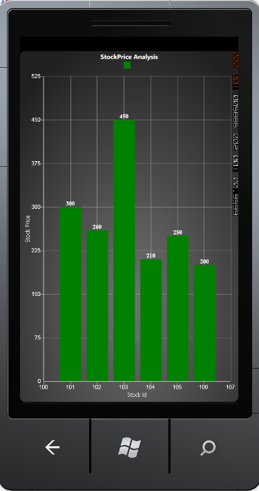

This feature is used to display additional information such as X value, Y value, Percentage, Y of Total and Data Source information about the Chart Series. The AdornmentInfo class is used to display Adornments for the Chart Series.
The following table lists the properties of the AdornmentInfo class.
|
Property |
Default Value |
Description |
|
Visible |
False |
This property is used to determine the Visibility of Chart Adornment and Adornment Symbol.
If this property is set True, the adornment will be displayed, else the adornment will be hidden. |
|
LabelContentPath |
DataPoint.Y |
This property is used to determine the data content, which is displayed in Adornment.
The DataPoint.X and DataPoint.Y strings are used to display the X value and Y value in the Adornment. |
|
HorizontalAlignment |
Center |
This property is used to determine the horizontal alignment for the Adornment content. |
|
VerticalAlignment |
Center |
This property is used to set the vertical alignment for the Adornment content. |
|
AdornmentsPosition |
AdornmentsPosition.Top |
This property is mainly used in Column chart type. By default, the Adornments are displayed at the Top of the Chart Series.
If this property is set to Bottom, the Adornments will be displayed at the Bottom of the Series Segments. |
|
Symbol |
Symbol.Custom |
The Symbol enum type provides the set of built-in symbol options for this property. This property is used to determine the Adornment symbol.
Users can customize their own data template symbol by setting this property value to Custom. |
|
SymbolInterior |
Colors.Transparent |
This property is used to set the Symbol fill color. This property can take any value of type Brush. |
|
SymbolHeight |
0 |
This property is used to specify the Adornment symbol height. |
|
SymbolWidth |
0 |
This property is used to specify the width of the Chart Adornment's symbol. |
|
SymbolTemplate |
null |
This property is used to write custom symbol templates for the Chart adornment symbol. This property supports DataTemplate. |
|
LabelTemplate |
null |
This property is used to write custom label template for the content of Chart Adornments. The DataTemplate can be written to customize the chart adornment. |
|
SegmentLabelContent |
LabelContent.LabelContentPath |
The LabelContent enum type has a set of options to display the Adornment information. It includes the following options:
LabelContentPath: Displays the data, which is assigned to LabelContentPath property. XValue: Displays the X Value of chart points. YValue: Displays the Y Value of chart points. Percentage: Displays the Percentage value of Total YValue. YofTot: Display the Y value and Sum value of the whole series y value. DateTime: Displays the date when we bind the date in the chart X-Axis. |
|
SegmentLabelFormat |
0.00 |
This property is used to set the Label display format. You can prefix or suffix content and format the numbers. |
|
SegmentLabelFontFamily |
Times New Roman |
This property is used to set the font for the Chart Adornment content. |
|
SegmentLabelFontSize |
10 |
This property is used to set the font size of the Chart Series Adornment. |
|
SegmentLabelFontWeight |
FontWeights.Normal |
This property is used to set the font weight for the segment label. |
|
SegmentLabelDateTimeFormat |
dd/mm/yyyy |
This property is used to format the DateTime related segment labels. |
|
SegmentLabelRotation |
0 |
This property is used to rotate the segment label in a given angle. |
The following code example illustrates how to display Adornments in the Chart Series segments.
|
[XAML]
<syncfusion:Chart Background="LightBlue" Margin="20" CornerRadius="25" BorderBrush="Black" BorderThickness="1"> <syncfusion:ChartArea Foreground="Black"> <syncfusion:ChartArea.Header> <TextBlock Text="Production Review" FontWeight="Bold" FontSize="14" HorizontalAlignment="Center" VerticalAlignment="Center"/> </syncfusion:ChartArea.Header> <syncfusion:ChartArea.PrimaryAxis> <syncfusion:ChartAxis GridLineStrokeThickness="0.5"> <syncfusion:ChartAxis.Header> <TextBlock Text="Product ID" FontWeight="Bold"/> </syncfusion:ChartAxis.Header> </syncfusion:ChartAxis> </syncfusion:ChartArea.PrimaryAxis>
<syncfusion:ChartArea.SecondaryAxis> <syncfusion:ChartAxis GridLineStrokeThickness="0.5"> <syncfusion:ChartAxis.Header> <TextBlock Text="Production" FontWeight="Bold"/> </syncfusion:ChartAxis.Header> </syncfusion:ChartAxis> </syncfusion:ChartArea.SecondaryAxis>
<syncfusion:ChartSeries Interior="Green" DataSource="{StaticResource data}" BindingPathX="ProductID" BindingPathsY="Produce"> <syncfusion:ChartSeries.AdornmentsInfo> <syncfusion:ChartAdornmentInfo Visible="True" LabelContentPath="DataPoint.Y" VerticalAlignment="Top" SegmentLabelFontSize="13" SegmentLabelFontWeight="Bold"/> </syncfusion:ChartSeries.AdornmentsInfo> </syncfusion:ChartSeries> </syncfusion:ChartArea> </syncfusion:Chart> |
|
[C#]
// Initializing the Chart and Chart Area. Chart chart = new Chart(); ChartArea area = new ChartArea(); chart.Areas.Add(area);
// Initializing the Adornment Information. ChartAdornmentInfo adornment = new ChartAdornmentInfo(); adornment.Visible = true; adornment.HorizontalAlignment = HorizontalAlignment.Center; adornment.VerticalAlignment = VerticalAlignment.Top; adornment.LabelContentPath = "DataPoint.Y"; adornment.SegmentLabelFontWeight = FontWeights.Bold; adornment.SegmentLabelFormat = "0.00"; adornment.SegmentLabelFontSize = 12;
// Assigning the AdornmentInfo class instance to Chart Series. ChartSeries series = new ChartSeries(); series.AdornmentsInfo = adornment;
// Adding the Chart Series to the Chart Area. area.Series.Add(series); |

Figure 66 : Chart Series Adornment
 Custom Adornment Template
Custom Adornment Template